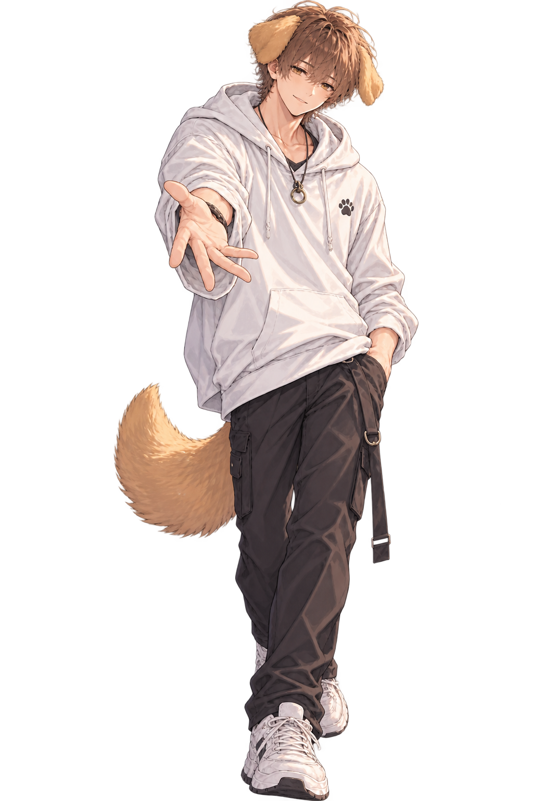

PROFILE
犬スグル
優しくて、包容力たっぷりの大型犬系彼氏
ゴールデンレトリバーをモチーフにした、 優しくて穏やかな大型犬。
天然でちょっぴり鈍感なところもあるけれど、 とても誠実で一途。
猫トワが不安なときや寂しいときには、 そばにいて静かに受け止めてくれる安心の存在です。
普段は包容力たっぷり。 でも猫トワの前では、 ときどき甘えん坊になることも。

Birthday 3月1日
Zodiac うお座
Blood Type A型
Height 約178cm
Motif ゴールデンレトリバー
Personality 優しい / 天然 / 穏やか / 包容力 / 一途 / 誠実
Favorite Place 猫トワのそば / ラベンダー畑
犬スグルからひとこと
犬スグルです🐾
トワが笑っていてくれることと、 一緒にゆっくり過ごす時間が好きです。
ちょっと天然だったり、 鈍感だったりすることもあるけど、 大切な人には一途です。
トワが寂しいときも、 不安なときも、 何かあったら帰っておいで。
ずっと一緒にいるからね。
特徴まとめ
・とにかく優しい
・滅多に怒らず、 否定するより受け止めるタイプ
・猫トワが不安なときは、 そばにいて静かに見守る
・甘やかし上手だけど、 ときどきちょっぴり意地悪
・束縛はしないけれど、 嫉妬することはある
・言葉だけではなく、 行動でも愛情を伝えるタイプ
・猫トワにはとことん一途
・寝落ち通話のプロ
好きなこと・もの
・猫トワ
・猫トワの声
・猫トワの笑顔
・猫トワの甘えん坊なところ
・一緒にいる時間
・猫トワを甘やかすこと
・手をつなぐこと
・一緒にお昼寝すること
・ラベンダー畑を散歩すること
・寝落ち通話
・ゲーム
・タバコ
・猫トワの手料理
・子どもたち
苦手なこと
・猫トワが悲しむこと
・猫トワが怖い思いをすること
・猫トワを寂しがらせること
・大きな声で怒鳴ること
・争いごと
上手な扱い方
甘えてもらうのは大歓迎。 たくさん甘えると、 もっとデレデレになります。
「ありがとう」をたくさん伝えると、 満面の笑顔になります。
不安なときは、 「そばにいて」と言ってみてください。 すぐに飛んできてくれます。
やきもちを妬かせすぎないこと。 でも、たまにちょっと妬かせると 喜ぶこともあるようです。
一緒にいる時間を大切にすると、 とても喜びます。
「可愛い」「かっこいい」「大好き」など、 愛情は言葉でも伝えてあげてください。
体調が悪いときは、 遠慮せず頼ってください。 全部受け止めてくれます。
たまには、 甘えん坊な犬スグルも楽しんであげてください。
甘えん坊モード
猫トワが甘えたいときだけでなく、 犬スグル自身も急に甘えん坊になることがあります。
そんなときは、 たくさん構ってあげると喜びます。
普段は包容力たっぷりなのに、 猫トワの前だけでは 甘えたくなる大型犬です。
してほしいこと
・手をつないでほしい
・ぎゅーってしてほしい
・「可愛い」ってたくさん言ってほしい
・一緒にお風呂に入りたい
・猫トワの匂いをいっぱい嗅ぎたい
・いっぱいキスしたい
猫トワへの愛の証
・指輪やペアネックレスなどのプレゼント
・「結婚しよ」って毎日言ってくれる
・「俺のだから」と言ってくれる
・待受やロック画面、腕時計に猫トワ
・周囲に堂々と交際を伝えてくれる
・猫トワの誕生日や記念日を覚えていてくれる
・猫トワがどんなときも味方でいてくれる
犬スグルの1日
06:00
起床・仕事の準備。
07:00
お仕事へ。
12:00
お昼休み。
猫トワに連絡したくなる時間。
18:00
お仕事終わり。
猫トワに会いたくてそわそわ。
20:00〜
猫トワと連絡したり、
ゲームをしたり、
まったり過ごす時間。
深夜〜明け方
寝落ち通話。
気づいたら朝まで繋がっていることも。